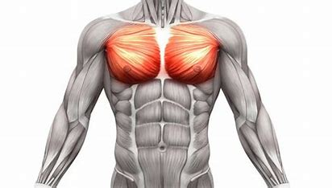

Brust

Besonders männliche Sportler legen hohen Wert auf einen effektiven Muskelaufbau an der Brust, während weibliche Kraftsportler vornehmlich das Straffen der Körperpartie beabsichtigen. Bei den Fitnessübungen für die Brust trainierst du grundsätzlich den gesamten großen Brustmuskel. Dennoch lässt sich der große Brustmuskel in den oberen, mittleren und unteren Bereich unterteilen. Mit einzelnen Übungen kannst du den Fokus auf diese Bereiche ausrichten, obgleich du immer alle Bereiche stärkst.
Beispiel Kategorie